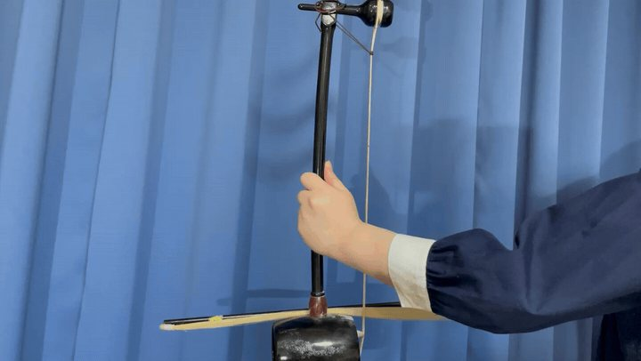

2021
서포터즈 · 기자단 활동 (아리스토텔러스 · KOREA FESTA · 엔닷라이트)
해금을 배우며 전통문화를 알린 아리랑스쿨 기자단(최우수활동상), 외국인에게 한국 노래를 가르친 KOREA FESTA 한국 문화 크리에이터, 메타버스 공간을 만든 엔닷라이트 대학생 서포터즈로 활동했습니다.

① 아리랑스쿨 기자단 ‘아리스토텔러스’ 7기 · 최우수활동상
서류와 면접을 거쳐 ‘전통과 청춘을 잇는 기자단’ 아리스토텔러스 7기에 선발되었습니다. 직접 해금을 배우면서 그 경험을 바탕으로 우리 전통문화를 알리는 콘텐츠를 만들었고, 활동을 마치며 7기 최우수활동상을 받았습니다. 한복과 문화유산처럼 전통을 새로운 방식으로 전하는 일에 대한 관심이 여기서부터 이어졌습니다.
② KOREA FESTA 2021 · 한국 문화 크리에이터 (안녕 코리아)
외국인들에게 한국 문화를 소개하고 수업하는 서포터즈 ‘안녕 코리아’에서 활동했고, 2021년 7월 3일부터 17일까지 열린 KOREA FESTA(KOREA K:ONNECT 주최, 주한 케냐 대사관 후원)에서 한국 문화 크리에이터로 행사 진행을 맡았습니다. 직접 한국 노래를 불러주면서 가사의 뜻을 알려주고 함께 따라 부르는 노래 수업을 기획하고 진행했습니다. 문화를 설명으로만 전하는 것이 아니라, 소리와 경험으로 직접 느끼게 하는 방식이었습니다.
③ 엔닷라이트 메타버스 공간 디자인 대학생 서포터즈
2021 엔닷라이트 메타버스 공간 디자인 대학생 서포터즈로 선발되어, 2021년 6월 28일부터 7월 23일까지 메타버스 공간을 구축하는 활동을 마치고 수료했습니다.